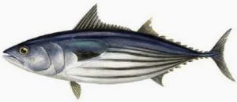

Ikan Cakalang (Katsuwonus pelamis) adalah ikan berukuran sedang dari familia Skombride (tuna). Satu-satunya spesies dari genus Katsuwonus. Cakalang terbesar, panjang tubuhnya bisa mencapai 1 m dengan berat lebih dari 18 kg. Cakalang yang banyak tertangkap berukuran panjang sekitar 50 cm. Nama-nama lainnya di antaranya cakalan, cakang, kausa, kambojo, karamojo, turingan, dan ada pula yang menyebutnya tongkol. Dalam bahasa Inggris dikenal sebagai skipjack tuna.